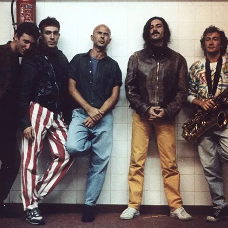

El nacimiento de patricio rey
Publicado el 29 de mayo, 2025
La prehistoria de una leyenda, nacida en el under de las diagonales. El Pasaje Rodrigo, las primeras canciones y toques en bares, teatros y sótanos.
En las entrañas del Pasaje Rodrigo -una galería comercial en un edificio histórico, patrimonio arquitectónico de La Plata, a la cual se accedía por el boulevard 51 y la calle 50, entre las calles 4 y 5-, Skay comandaba como podía los ensayos y grabaciones. Beto Verne en guitarra, Pepe Fenton en bajo, Bernardo Rubaja en piano y los hermanos Ricky (violín) y Basilio Rodrigo (guitarra) eran parte de un elenco nunca estable. El objetivo era interpretar musicalmente los climas oníricos de los relatos del Indio y Guillermo. Primero sonorizaron las películas y después hicieron la música. Una vez concluido el trabajo, quedó montado un estudio de una calidad considerable. Los chicos se quedaban tocando, sacando temas ajenos, garabateando temas propios.
Fenton: En ese instante nacen los Redonditos. El equipamiento del estudio estaba muy bien y nos juntábamos a zapar con cierta periodicidad. A veces venía Alejandro Medina, que estaba casado con una chica de La Plata. Alguien preguntó… ¿Y si armamos una banda? Yo tomé el rol de bajista, pero no tenía ni idea. Medina me pegaba con una regla en los dedos para que tocara bien.
Las canciones salían como consecuencia del relajo de las jam. Entre bases y punteos sin destino más que el de producir una música de clara impronta progresiva y psicodélica, se colaba alguna melodía, algún estribillo, se definía una estructura cercana a la canción. Muchos esqueletos de esas canciones se perdieron irremediablemente, otros apenas nutrieron los primeros conciertos y un pequeño porcentaje sobrevive en la discografía oficial de los Redonditos. El Indio aparecía poco. Dentro de la falta de organicidad, emergía con nitidez el liderazgo de Skay. Era el único que proponía que las ideas llegaran a un puerto musical. Su célebre silbato para darle paso a intervenciones de solos era el perfecto símbolo de la autoridad de su rol.
Fenton: La primera canción que tuvimos más o menos lista fue un blues llamado “Honolulu”. También me acuerdo de un tema que era una especie de reggae, con música de Skay y letra de varios. Guillermo estaba viviendo en Venezuela. Por eso compusimos un reggae que se llamó “No solamente vos estás en el Caribe”, y se lo mandamos. Después pasó a llamarse directamente “El reggae”.
Guillermo Migoya (baterista): Todo nos marcaba. Éramos un grupo heterogéneo. A mí me gustaba King Crimson, a otros Alice Cooper, Allman Brothers, Rolling Stones, Bob Dylan, Led Zeppelin… Pero a la hora de tocar y componer esas influencias no tenían mucho peso, ya que el resultado de la banda era completamente diferente.
La fiesta ocurría en la oscuridad. Al Indio Solari le gustaba decir, en referencia a la tensa relación entre las juventudes políticas y los rockeros: “Nosotros no queríamos tomar el poder; queríamos cambiar la vida”. Décadas más tarde, en “Tomasito, ¿podés verme? ¿Podés oírme?” –título que alude a una de las canciones principales de la ópera rock Tommy (1969), de The Who– escribió que “los 60 fueron tres putos años nomás”. Agriamente, Solari apuntaba a los que observan la década del 60 como un sueño dorado y compacto, cuando fueron años plenos de matices.
En la Argentina los 70 aparecen, en contraste, como una década marcada por sensaciones abismalmente contradictorias que fueron de la esperanza del retorno de Perón al terrorismo de Estado, pasando por los papelitos del Mundial ’78. Los 70 fueron incluso más que diez años y se despedazaron de la peor manera posible: en 1982, con una guerra. Uno de los últimos combates de la Guerra Fría.
Fueron los años en que Patricio Rey blindó su ideología y paulatinamente puso en marcha, logro a logro, la configuración definitiva en banda de rock and roll. La necesidad de producir música incidental para las exploraciones audiovisuales del Indio y Guillermo Beilinson fue el primer paso hacia una vaga idea de profesionalismo. A grandes rasgos, y con la perspectiva del tiempo, esta etapa operó como un filtro: solo seguirían adelante los que estaban convencidos de que este “rejuntado de drogones” tenía una dirección, una meta.
Ninguno perdía contacto con La Plata: iban y venían, y en cada ir y venir Poli se encargaba de coordinar fechas y agendas para mantener la mística del encuentro. La banda tenía un funcionamiento espasmódico, el ritmo estaba signado por las urgencias de los tiempos políticos: una guerra de guerrillas rockera, un grupo que aparecía furtivamente, perpetraba su delirio y volvía a dispersarse. En La Plata, una ciudad concentradamente ideologizada, el concepto de que la Triple A y luego la dictadura no perseguían al rock era discutible. Desde 1968 operaba en las facultades la CNU (Concentración Nacional Universitaria), una fuerza de choque de la derecha peronista que, a partir de mediados de la década del 70, se transformó prácticamente en una célula paraestatal. Un famoso asado en City Bell fue interrumpido por grupos parapoliciales, y la picana corrió dura y pareja para el Indio Solari, para Skay, para todos.
El limbo entre el concierto de rock y el happening fue el cenit de la ideología ricotera, el origen de un discurso que dominó los años 80. Ampliamente, una filosofía del placer. Pero también una sugestiva forma de actuar en los márgenes, en una semiclandestinidad tan heroica como desquiciada. El discurso caló hondo en la gente. La inspirada idea de crear un misterioso personaje-deidad que manejaba los destinos de esos pobres diablos, títeres de ese ser superior, hizo el resto. Patricio Rey funcionó durante años como un ente real, o al menos posible: un juego jugado con seriedad. El periodista y poeta Pipo Lernoud considera que esa característica viene de las creencias chamánicas que tenía el Indio en aquellos tiempos, en su convicción de que podían existir sujetos que operaban como médiums. Patricio Rey y sus Redonditos de Ricota no era un baile de máscaras; era un baile de identidades. La confusión –buscada– duró mucho tiempo, el suficiente para cimentar el mito. Años más tarde, en una entrevista radial de Tom Lupo, el Indio llevó la fantasía al paroxismo.
Este capítulo forma parte del libro «Fuimos reyes. La historia completa de los Redonditos de Ricota» (Editorial Planeta), escrito por Mariano del Mazo y Pablo Perantuono.